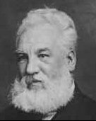

Sunday, September the 26th, 2004
back to: title, date or indexes
Imagine you have never used a telephone before. It rings, and you pick up the receiver. You don't know that the social convention is to say “Hello?” or “Dobson here. Who's calling?” or something similar. So what do you say? One man who faced this dilemma was, of course, Alexander Graham Bell, who invented the thing, or at least got the patent on it. His preferred manner of answering the telephone was to shout “Ahoy!” This seems to me far more exciting than a dull “Hello”, and it's a pity that Bell's habit never caught on. It is, of course, never too late to overturn various social conventions. If we all started yelling “Ahoy!” when answering the telephone, the world would be just a little bit more pleasurable.
.
Bell : Ahoy!
On a vaguely related note, I take this opportunity to mention that the first ever message sent in Morse code, by Samuel Morse himself, was “What hath God wrought?”
Hooting Yard on the Air, September the 30th, 2004 : “A Refutation of Some of the Less Plausible Claims Made by Dennis Cargpan in His Woeful Lecture Delivered From the Balcony of the Civic Hall at Bodger's Spinney on Thursday Last During a Hailstorm to a Gathering of Ingrates and Orphans” (starts around 20:57)